早上起床仍然累、无精打采，精神差到靠咖啡撑
你身体累，其实不是你懒
🧠 你以为只是「累」，其实是身体在警告你。根据研究，以下 8 个无声征兆，都是慢性发炎的信号：
脑雾、工作越久注意力越难集中、记忆力退步
肝功能指标偏高、三高数值异常
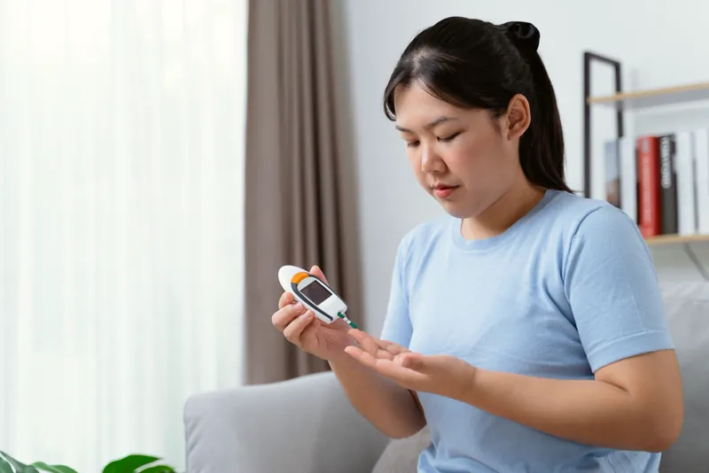
血糖、血脂长期居高不下
长期睡不好、压力大、情绪不稳定
慢性疲劳、肩颈僵硬、酸痛找不到原因
免疫力低下，常感冒、容易感染
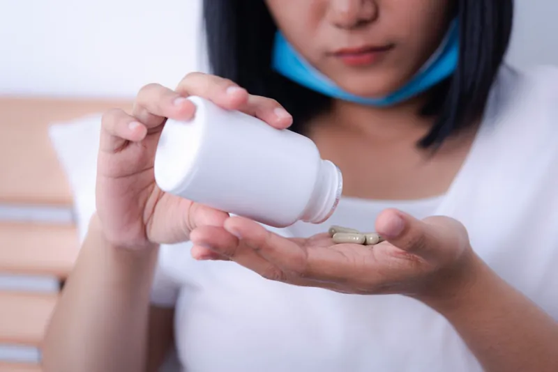
吃了各种保健品、营养品，一点改变也看不到
📌 这些症状，大多都源自一种共通的底层问题：长期慢性发炎 → 细胞受损、修复力下降、代谢失衡。
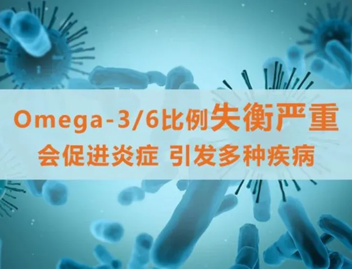
大多数人「感觉累」的真正原因
现代人摄取过多 Omega-6（精致油脂、外食、加工食品），却严重缺乏 Omega-3，导致：
- 身体长期处于「慢性发炎状态」，细胞无法正常运作
- 修复机制失灵，体力、脑力、代谢能力全面下滑
- 高血糖、高血压、高血脂变得更难控制
- 再多睡觉也无法真正恢复
超过 89% 的亚洲人 Omega-6:3 比值严重失衡，发炎风险提升 2.6 倍！
Omega-6:3 比值失衡风险指数
忽略这些症状，小病会变大病！
慢性发炎是现代人的隐形杀手，你中了多少个？
关节反覆疼痛
膝盖、手指、肩颈常有隐隐作痛
肌肉酸痛难恢复
运动或疲劳后需数天才能复原
长期疲倦
即使睡够仍觉得累、没精神
伤口久不愈
小伤口也反覆感染
肠胃不稳定
腹泻或便秘、胃酸逆流
皮肤问题
湿疹、痘痘、过敏反覆出现
情绪与专注力下降
焦虑、记忆力衰退、脑雾
睡眠障碍
浅眠、醒来仍感疲惫
慢性发炎不是一夜之间发生，而是每天饮食、压力、睡眠失衡累积的结果。若不改善，细胞受损将持续扩散。
若忽视慢性发炎，可能演变成：
- ❤️ 心血管疾病（高血压、高胆固醇、动脉硬化）
- 💉 第二型糖尿病
- 🧫 自体免疫疾病（红斑性狼疮、甲状腺问题）
- 🧬 癌症：长期发炎已被证实与肿瘤生成有关
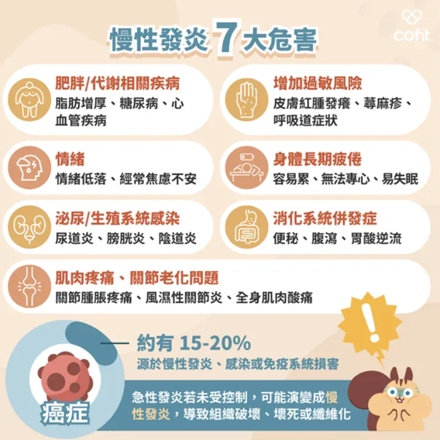
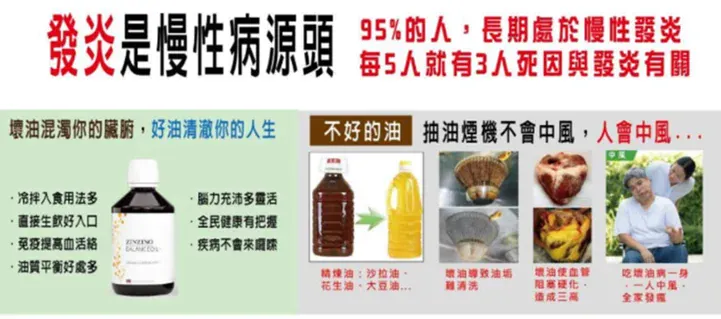
为什么选择 CELLREGEN365™
从源头对抗慢性发炎，打通身体修复与吸收通道。
- 🧪 ZINZINO BalanceOil + BalanceTest（发炎检测）
- 🧬 AFC Japan 三大专利胜肽营养品（SOP / Utsukushhii / Hikari）
- 📊 科学修复机制 + 数据追踪 + 顾问服务
这不是「吃好一点」的建议，而是一套能在 30 天内激活身体修复系统的科学营养方案，并附带检测报告验证效果。
🌿 CELLREGEN365™ 让你从根源抗发炎，95% 用户体检报告显示：细胞吸收与发炎指标显著改善。
🧪 第一步：检测｜Zinzino BalanceTest
在家用指尖采一滴血，寄到独立实验室，分析 11 项脂肪酸。报告会告诉你：
- 你的 Omega-6:3 比例是多少，离 3:1 的目标有多远
- Omega-3 指数，以及 EPA / DHA 够不够
- 细胞膜流动性等脂肪酸健康指标
🫒 第二步：平衡｜Zinzino BalanceOil+
每天 1 汤匙，补充鱼油中的 EPA、DHA，加上橄榄多酚保护油脂不被氧化，再配合饮食调整，把 Omega 比例拉回平衡。
🧬 第三步：修复｜AFC Japan 专利胜肽
根据你的需要，搭配 AFC 日本低分子胜肽营养品：
- SOP Subarashi：细胞修复核心，适合疲劳体质、三高族群
- Utsukushhii：免疫与美肤防护，适合压力大、常熬夜应酬的人
- HIKARI：大脑与神经再生力，适合用脑、用眼过度的人
📊 第四步：追踪｜顾问 + 120 天复测
专属顾问帮你解读报告、定期跟进。120 天后再做一次 BalanceTest，把前后两份报告放在一起对比，用数字确认改善。
从细胞层面，重启你的修复力与吸收力。
✅ 外补胶原活性肽 × ✅ 内修 Omega 营养通道，30 天启动细胞更新与能量平衡。点开每一项了解更多 👇
1｜双向激活
内修吸收力 × 外补修复力，胜肽结合 BalanceOil 打通修复链路。
很多人只补一种营养，效果有限。CELLREGEN365 用 BalanceOil+ 补充 Omega-3、调整脂肪酸平衡，再用 AFC 胜肽补充修复因子，从内外两个方向一起照顾身体。
2｜临床实证 + 检测验证
Zinzino BalanceTest 实测显示：95% 使用者成功改善 Omega-6:3 比例。
BalanceTest 由独立实验室分析，开始前测一次，120 天后再测一次。你可以清楚看到 Omega-6:3 比例和 Omega-3 指数的变化，而不是只靠感觉。
3｜抗老 + 免疫双效
胜肽 + Omega 结合可同步提升细胞再生速度与免疫平衡，改善肤况与睡眠。
每天 1 汤匙平衡油 + 2 包胜肽，3–5 分钟就完成。把它变成每天的小习惯，配合作息调整，慢慢找回好状态。
4｜日欧科技研发
AFC 日本低分子肽 + 北欧 Zinzino 平衡油，吸收率高达 95%。
AFC 在日本生产，拥有 GMP、JAS 有机认证与多项专利；Zinzino BalanceOil+ 来自北欧，通过 Informed-Choice、Friend of the Sea 等第三方认证。
5｜30 天有感
第 1 周提升精神睡眠，第 3 周改善肤况，第 4 周全面平衡。
- 第 1–2 周：建立每天补充的习惯，留意精神和睡眠
- 第 3–4 周：和顾问检查进度，调整饮食与作息
- 第 120 天：复测 BalanceTest，对比前后报告
6｜独家组合计划
唯一整合抗发炎 × 抗老化 × 吸收激活的个人化营养系统。
每个人的身体、饮食和作息都不一样。顾问会根据你的检测报告、生活习惯和目标，建议适合你的产品组合和用量，并定期跟进。
⚡ 立即报名 CELLREGEN365™ 30 天启动计划，附 BalanceTest 居家检测！
🧴 CELL REGEN 产品系列介绍
点击下方了解每一款核心产品的科学原理与功效 👇
BalanceOil+ 平衡油｜修复吸收系统
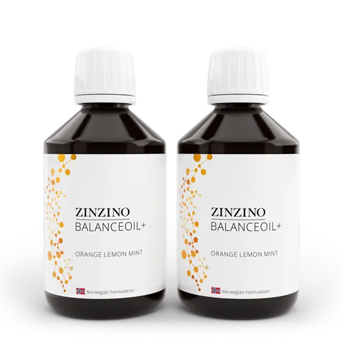
喝的科學級魚油，讓身體真正吸收、真正平衡。
Zinzino 是唯一可以【檢測吸收效果】的魚油。一湯匙 Zinzino = 8 顆膠囊魚油，但吸收率卻是膠囊的 3 倍以上。你每天吞 8 顆膠囊魚油，不如喝一湯匙真正吸收的 Balance Oil。與其吞很多，不如吸收得更多，一口喝的，勝過一把吞的。市售魚油最多停留 9 小時，Zinzino 在你體內穩定吸收 35 小時。膠囊魚油怕胃酸、怕氧化，Zinzino 不怕，因為有橄欖多酚保護！
不是吃了就有效，是【要吸收了才有效】。
- 含特級早收冷壓西班牙橄欖多酚
- 深海魚油：EPA + DHA + DPA 全面修復細胞
- 含維生素 D3 與 E，支持免疫與抗氧化
- 無氧化、獨創性配方，從內到外全面平衡
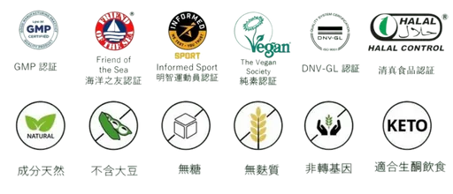
🔥 核心價值主張（USP）
- ✅ 高吸收率：Balance Oil+ 採用專利橄欖多酚配方，在體內可停留 35 小時不被氧化，吸收率高達 95%，遠勝一般魚油僅 20–30% 的吸收率。
- ✅ 人體可檢測數據：搭配 BalanceTest，可準確測出體內 Omega-6:3 比例，120 天內追蹤改善數據，看得見的效果。
- ✅ 高濃度營養配方：每 12ml 含 2500mg Omega-3（EPA 1300mg / DHA 700mg / DPA 150mg）+ 維生素 D3，遠超市售魚油膠囊。
- ✅ 天然安全來源：採用北大西洋深海小魚（生長期短、無重金屬污染）與冷壓橄欖油，確保純淨與高穩定性。
- ✅ EFSA 認可的 19 項健康益處：包含心臟、視力、免疫、胎兒腦部發展、脂肪控制等完整健康支持。
- ✅ 素食版選擇：海藻油配方，適合全素者補充 Omega-3（含 EPA + DHA）。
SOP Subarashi 胜肽饮｜细胞修复核心
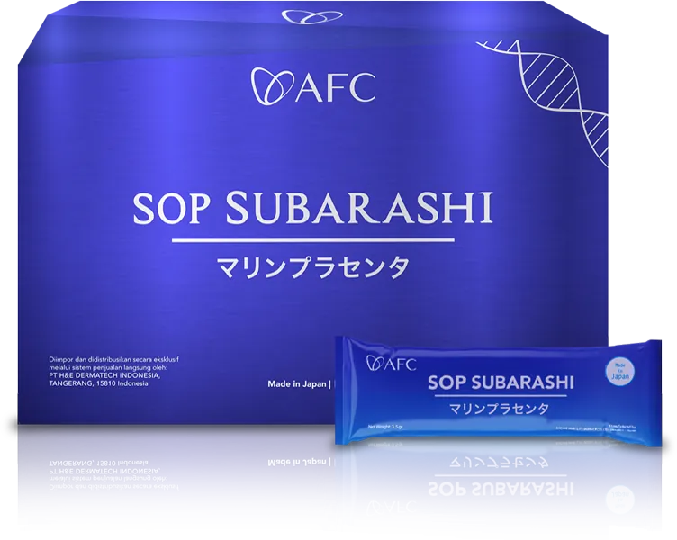
💜 SOP Subarashi 专利支持的逆龄科技
SOP Subarashi 融合 胎盘素活性胜肽 + 纳米小分子（800 Dalton），直达细胞核心，激活干细胞，真正从源头实现抗衰逆龄。
✅ 专利功效方向
- ✔ 促进细胞再生与修复：激活干细胞再生，帮助疲劳体质恢复元气，加速代谢修复速度。
- ✔ 改善血液循环、提升养分输送效率：缓解手脚冰冷、头昏脑胀、恢复活力。
- ✔ 稳定血压，支持三高体质调理：日常帮助高血压、高血脂人群体内调节。
- ✔ 降低血栓风险，增强心血管防护力：久坐族群、压力大者每日保护。
- ✔ 支持脑部神经修复、改善脑雾与情绪波动：提升专注力、舒缓焦虑、稳定神经系统（综合胜肽功能 + 血流改善）。
- ✔ 提高身体对压力的适应能力：让身体在高压环境下仍能保持修复与代谢功能。
🔑 一句话总结：没有修复，就没有真正的恢复。SOP Subarashi 是 CELLREGEN365™ 计划中的「细胞重启开关」！
📜 日本专利支持 · 科学验证抗老功效
- 专利 1（JP3946238B1）：促进细胞再生与修复，提升皮肤与组织年轻状态。
- 专利 2（JP3946239B1）：改善血液循环，增强血管健康，减少皮肤暗沉与疲劳。
- 专利 3（JPWO2003055901A1）：具抗高血压作用，延缓血管硬化。
- 专利 4（JP2009538895A）：预防血液凝结，降低血栓风险。
Utsukushhii 胜肽饮｜免疫与美肤防护
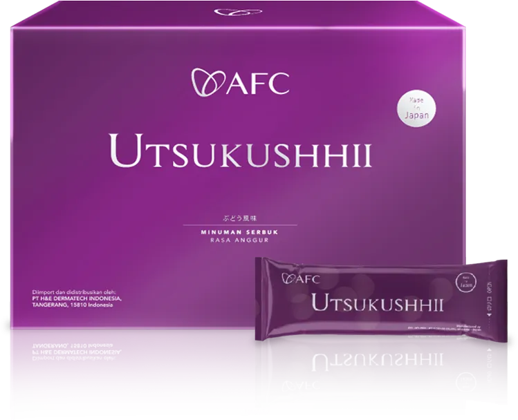
Utsukushhii 专利认证的逆龄美学
Utsukushhii 的确是一款功能强大的胜肽营养品，特别适合 免疫力下降、压力过大、肝功能负担重的亚健康族群。
含有多项 日本与美国注册专利，证实其在 提升免疫、抗病毒、护肝等方面的多重功效，全面提升人体免疫、抗炎和肠道修复能力。
✅ Utsukushhii 专利功效亮点
- ✔ 提升免疫力，增强防护系统：减少感冒、过敏与反复性发炎。
- ✔ 支持肝功能、加速体内排毒：特别适合常熬夜、吃药、饮酒、应酬族群。
- ✔ 抗自由基，延缓老化、保护细胞不被氧化破坏：舒缓压力、改善肤况、提升抗压能力。
- ✔ 辅助肠道修复，维持身体微生态平衡：改善排便不顺、胀气、免疫紊乱等问题。
- ✔ 全身抗衰：保护细胞免受自由基伤害，延缓衰老速度。
✨ Utsukushhii = 美丽外表 + 年轻身体双重守护，让你由内而外，真正逆龄。Utsukushhii 提供胜肽级免疫与排毒支持，让身体在高压环境下依然维持修复、防御与代谢平衡。
📜 专利科学验证 · 多重功效支持
- 专利 1（JP3040711B2）：细胞再生，降低慢性炎症风险。
- 专利 2（JP3272023B2）：激活免疫系统，提升身体自然防御力。
- 专利 3（JP2712000B2）：护肝修复，支持解毒与抗疲劳功能。
- 专利 4（JP2969017B2）：抗病毒保护，防止细胞早衰。
- 专利 5（JP5635690B2）：降低氧化压力与慢性发炎，延缓老化。
HIKARI 胜肽饮｜大脑与神经再生力
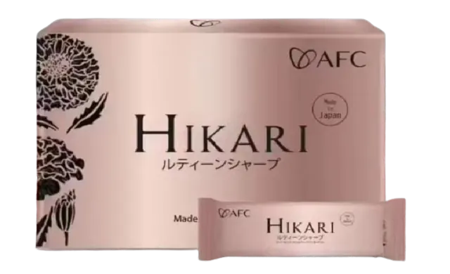
💗 HIKARI 专利守护 · 逆龄大脑
HIKARI 融合尖端科研成果，凭借 5 项美国与欧洲专利，全面守护视力、脑力与神经系统健康，帮助你从「眼睛」到「大脑」同步焕发活力！
- ❤️ 全面防护：提高免疫力，减少复发与并发症。
- 👉 Hikari 特点：强效抗氧化配方 + 12 种天然成分。
- 🧬 支持神经元修复：提升大脑语言中枢功能。
- 🧠 1. 提升大脑专注力与认知反应
功效：改善脑雾、提升反应速度、增强记忆力。
适合人群：用脑过度、焦虑型上班族、注意力涣散者。 - 👁️ 2. 缓解视觉疲劳，保护眼睛健康
功效：减少蓝光伤害，缓解长时间盯萤幕造成的视疲劳。
适合人群：电脑族、滑手机过度者、眼干涩模糊者。 - 🧬 3. 支持神经修复，稳定情绪系统
功效：促进神经元再生，支援神经传导与放松。
适合人群：长期失眠、焦虑、神经敏感者。 - 🔋 4. 快速吸收，高效细胞修复
说明：小分子肽仅 400 Dalton，吸收率极高。含 12 种天然抗氧化成分（多酚、植萃、维生素），帮助身体恢复修复节奏。 - ❤️ 5. 全面免疫支持，减少复发与小病不断
功效：抗氧化 + 抗发炎 + 提升免疫防护力。
适合人群：体力差、常感冒、过敏体质、病毒易感染者。
✨ 没有修复，就没有真正的恢复。HIKARI 是 CELLREGEN365™ 计划中的「大脑 × 神经重启方案」，让你的大脑与身体，一起年轻！
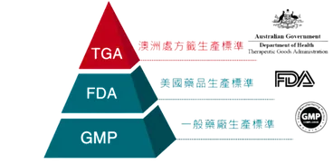
全球认证 · 专业信赖背书
所有 CELLREGEN365™ 相关产品皆通过日本 GMP、HALAL、MIMS 医学平台与多项国际检测机构认证。
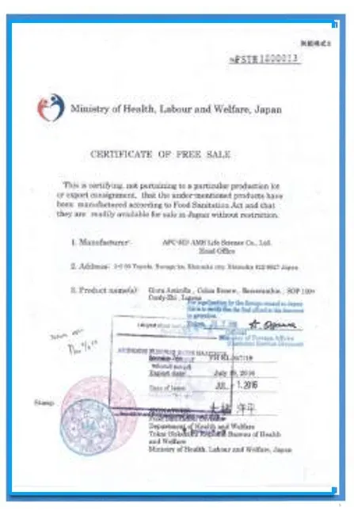
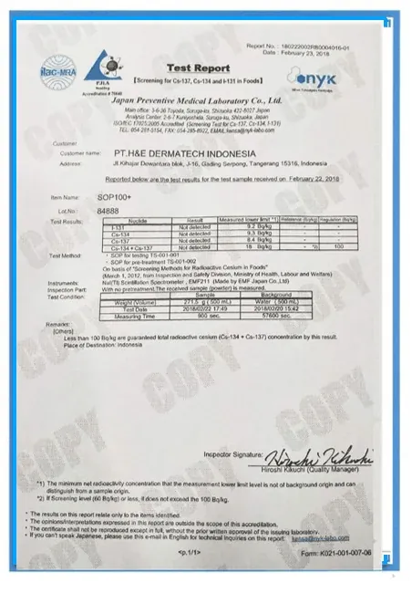
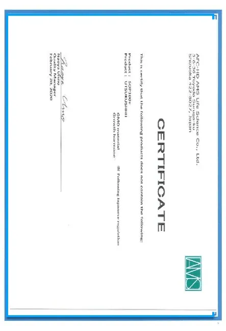
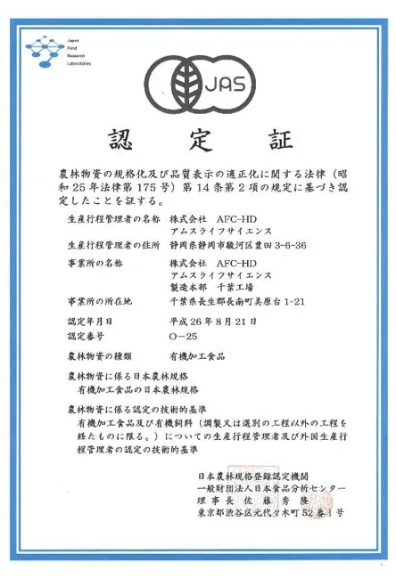
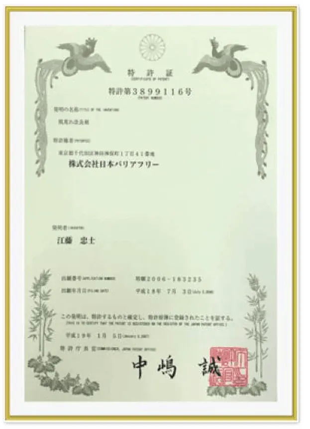
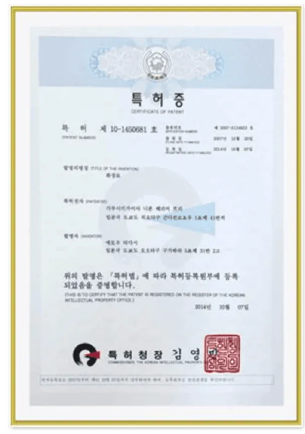
👩💼 User Experience | 使用者真实回馈（UGC）
真实的改变，看得见的逆龄力量。
我尝试了好多保健品，从来没有一个像这样——有检测、有追踪、有顾问协助。我真的有在变好。
以前常常半夜醒来、早上头昏，现在睡眠品质提升很多，连皮肤都变好了。
我本来对营养品很怀疑，但看到 BalanceTest 的检测报告变化后，真的相信身体能自己修复。
以前一到下午就要喝咖啡，现在整个白天精神都很稳定，晚上的睡眠也不再浅眠。
三高指数居高不下已经多年了，医生说我不是药的问题，是生活习惯。CELLREGEN365让我开始看到体检报告回归正常范围。
＊头像照片为示意图，非用户本人。
使用者真实回馈
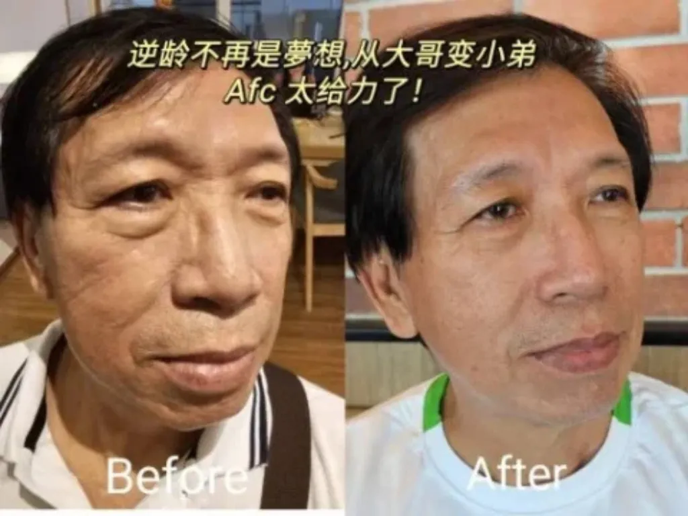
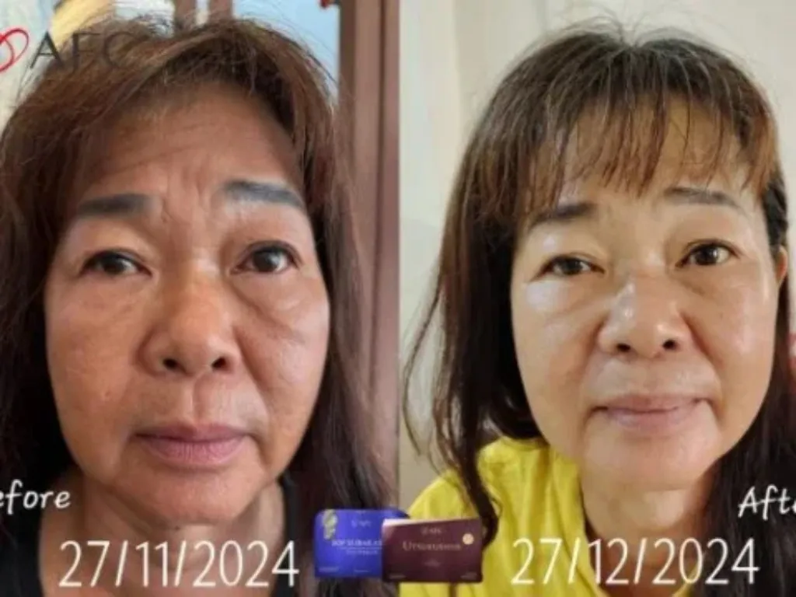
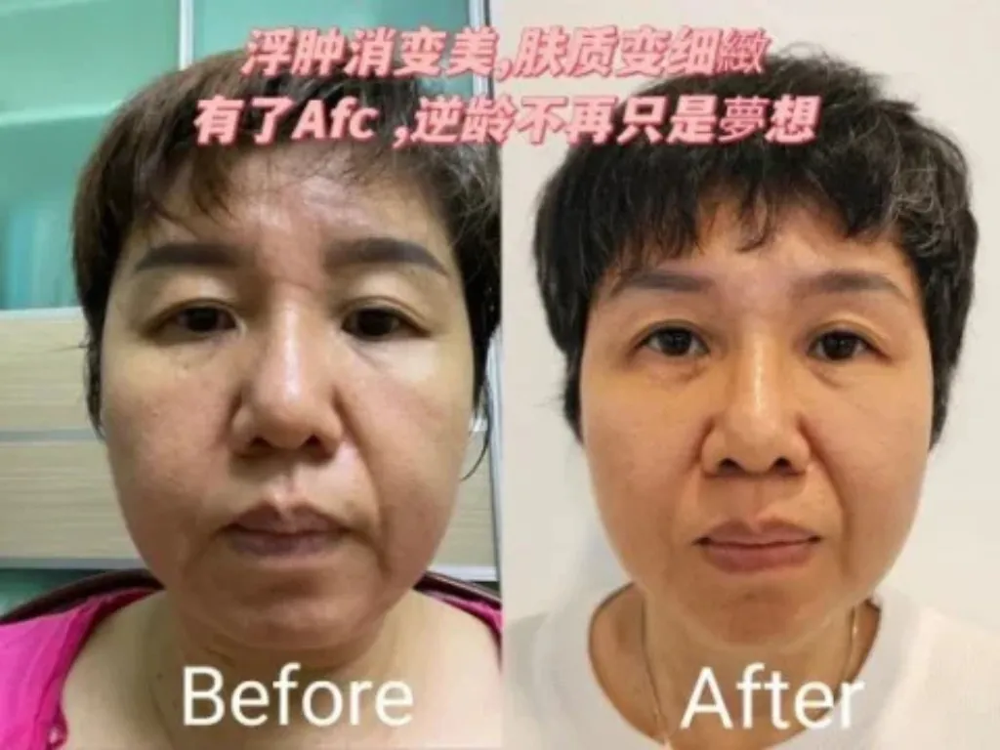
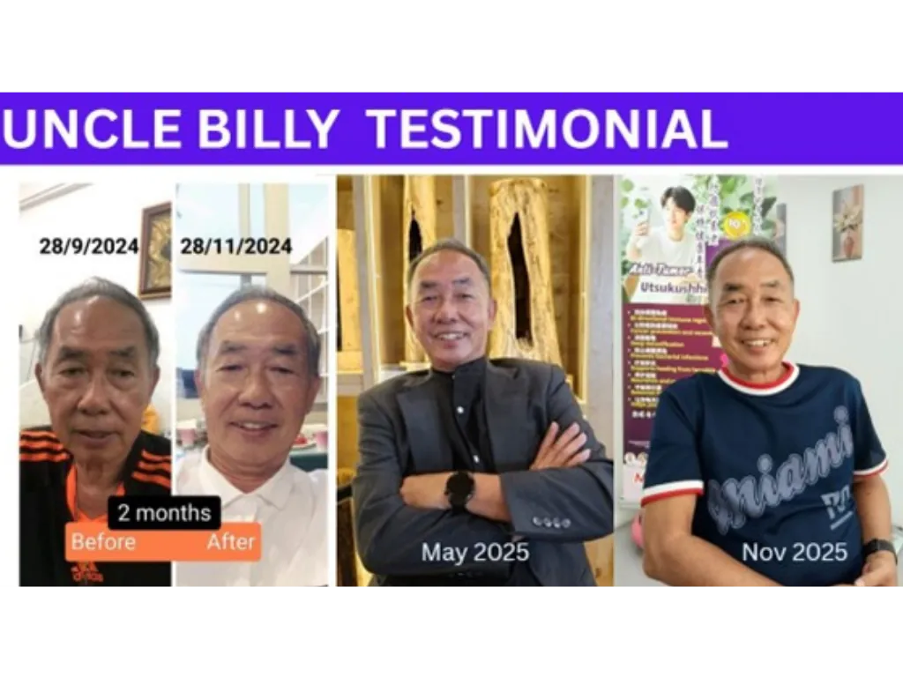
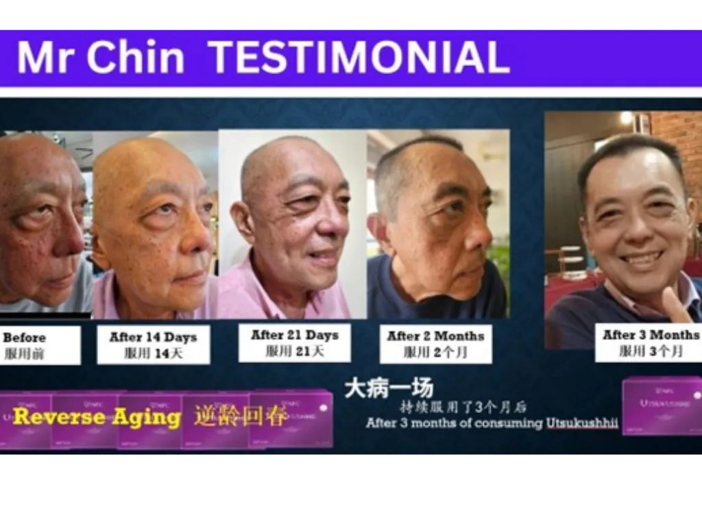
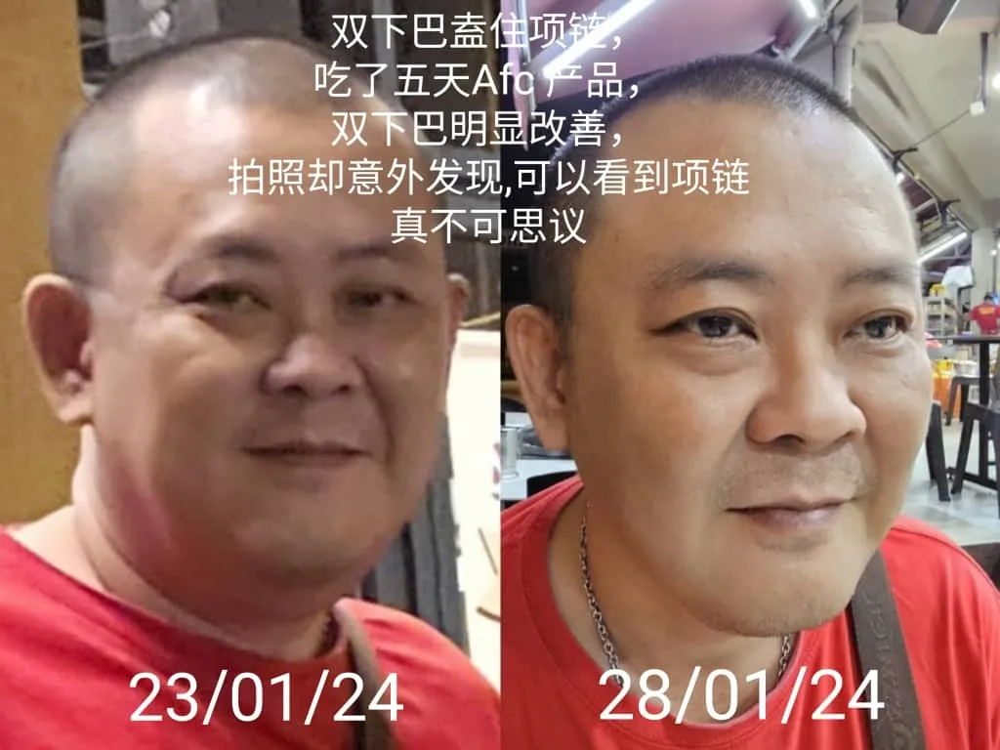
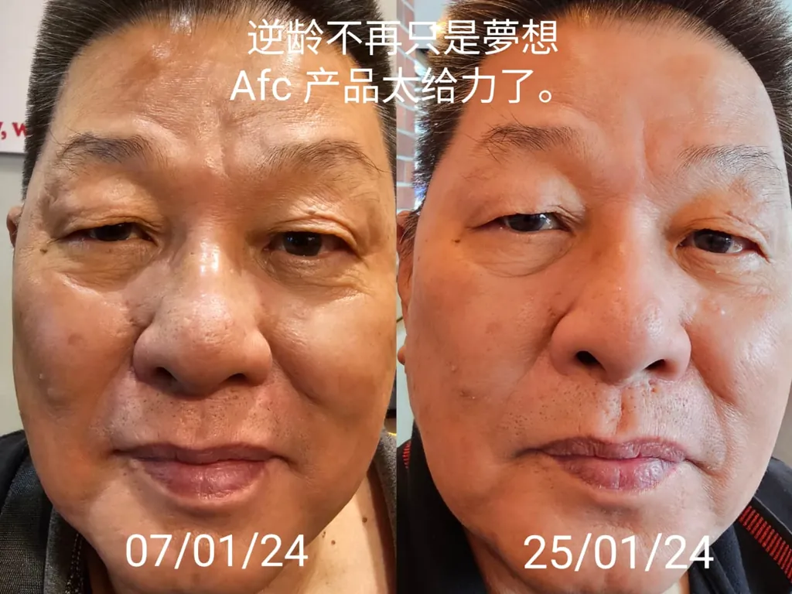
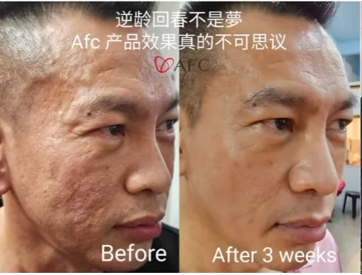
🌿 健康生活笔记
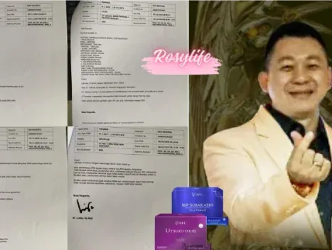
严重车祸奇迹生还+逆向衰老
50 岁的 Pak Yonanes 五年前遭遇了一场严重事故，导致他的大脑和身体多个部位受损。手术后，他开始了超级营养的养生法，过去五年来他坚定不移的承诺显示出显着的进步。他最近的大脑和心脏年龄只有 30 岁，这简直就是一个医学奇迹！他激动地惊呼，“我不仅没有变老，甚至还年轻了20岁……”其他人则对这种令人难以置信的转变感到惊讶。这不仅仅是冷冻衰老；这是逆转衰老、回春的奇迹！有了再生细胞的技术，年轻化不再是遥不可及的梦想
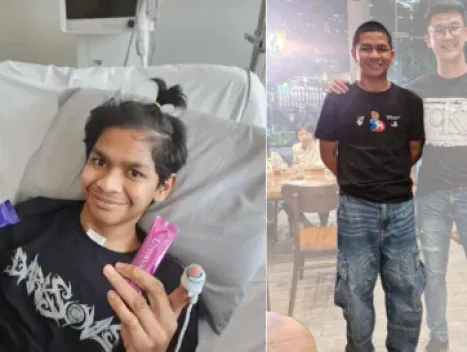
AFC 生命科学产品为 David Ozara 的生活带来了惊人的希望：
大卫头部严重受伤，诊断为弥漫性轴突损伤，康复率不到5%。经过一年的昏迷和各种治疗，医生宣布他患有永久性脑损伤。奇迹般地，大卫从弥漫性脑干损伤引起的昏迷中恢复过来。据医生称，康复的机会非常渺茫，约为 5%，而且他们表示他的脑神经已经遭受了永久性损伤。从 2023 年 2 月 2 日到 2023 年 3 月 7 日，大卫处于昏迷状态。2023年3月7日，大卫开始从昏迷中醒来，痛哭流涕，眼神空洞。到 2023 年 3 月 13 日，一位关键证人要求大卫的父亲给他 2 …
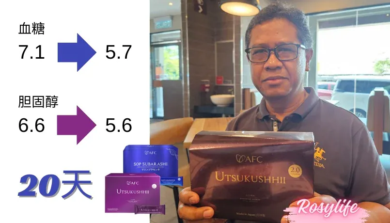
糖尿病患者的血糖水平有所下降。
Ishak 是一名糖尿病患者，也有高血压和胆固醇问题。尽管一路上尝试了许多方法，但他始终找不到解决办法，非常担心随时会引发更严重的疾病。他只服用了 20 天的 Sop Subrashi + Utsukushhii，他的健康检查报告让他大吃一惊：这些在如此短的时间内的变化，让他印象深刻。伊沙克兴奋地分享道：“短短20天，我经历了健康的奇迹。Sop Subrashi 改变了我的生活！这是他在健康之路上重新出发的见证，他的康复之旅已经开始。
用户见证分享
🔍 CELLREGEN365™ 如何帮助你反转发炎？
从根本修复细胞，让身体真正恢复代谢与平衡
1
降低 Omega-6:3 比值
平衡油脂结构，阻断慢性发炎循环，让细胞恢复正常讯号传导。
2
补充修复因子
结合胜肽与抗氧化营养素，加速细胞修复与再生。
3
发炎检测 + 数据追踪
BalanceTest 发炎检测验证改善，不盲目补充，而是精准营养。
📈 30天內身體有感，120天檢測數值驗證改善！
🚀 现在就开始改变！
🎁 立即申请 CELLREGEN365™ 体验计划
📦 获得：平衡检测 优惠价 RM300（市值 RM780）+ RM1395 体验组合
🎯 每天不到 RM50，换回真正有能量的身体！💪 让你的细胞每天都在激活再生中。
👉 立即申请 30 天健康激活方案⚠️ 限量 100 名，额满即关闭注册。
🎯 目标人群精准画像
他们正是 CELLREGEN365™ 改变的开始
高压上班族
30–45岁 · 脑力劳动 · 加班熬夜
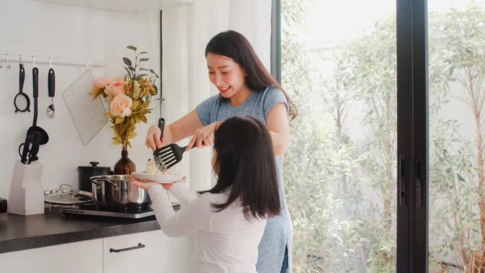
家庭照护者
35–55岁 · 照顾家庭、老人、孩子
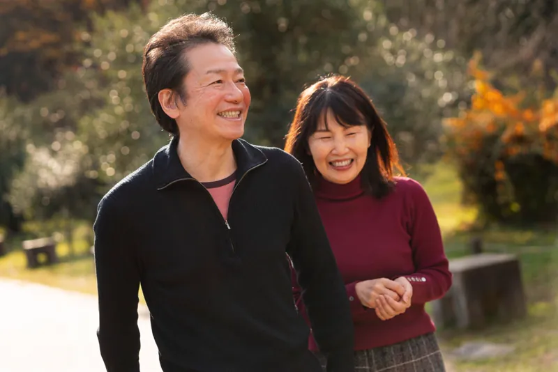
三高体质族
40岁+ · 血糖 / 血脂 / 血压偏高
慢性疲劳人群
长期精神差 · 无精打采 · 白天昏沉
💬 真正的健康，不是靠意志力硬撑，而是从细胞修复开始。
✨ CELLREGEN365™：数据驱动的 30 天健康激活计划，你只需给身体对的营养，95% 的吸收率，它自然会变好。
— CELLREGEN365 · 科学修复 · 重启生命力 —
📌 FAQ｜常见问题解答
🔍 有疑问？我们帮你准备好了 👇
❓ CELLREGEN365™ 是保健品吗？吃了会不会有副作用？
✅ 不是一般保健品，而是有检测依据的营养修复计划。
所有产品皆为食品等级营养补充，成分天然，无添加药性，无副作用，通过日本/欧洲多项专利认证与国际安全标准（GMP、ISO等）。长期使用也安全可靠。
❓ 多久可以看到效果？
✅ 7~10天多数人开始有感，30天明显改善，120天检测验证。
- 第1周：体力、专注力、睡眠开始改善
- 第2~4周：情绪更稳定、精神更好、疲劳感降低
- 第8~12周：三高数值、发炎指数等出现实际改善
📌 建议至少使用完整1个周期（30~120天）并搭配检测追踪。
❓ 我已经在吃药（降压/降糖/降脂），可以一起使用吗？
✅ 可以。
CELLREGEN365™ 所使用的营养产品为非药物成分，可与大多数处方药共用，无交互风险。但若您有特殊用药状况（例如抗凝血剂或重大疾病），建议事先咨询营养顾问或主治医师。
❓ 如果没有感受到明显变化，怎么办？
✅ 我们提供「90天改善追踪机制」+ 专人顾问服务。
你不是一个人在尝试，而是有检测报告 + 顾问跟进的系统化支持。如果在90天内仍未感受到明显改善，我们提供产品转换、顾问营养调整建议或专属补充建议。
❓ 我适合加入 CELLREGEN365™ 吗？
✅ 以下族群特别推荐加入 👇
- 经常疲倦、脑雾、睡不好
- 长期高压、情绪焦虑、专注力差
- 三高体质：血糖/血压/血脂偏高者
- 肝功能、肠道、免疫系统需调理
- 想要从「身体发炎源头」开始改善健康者
❓ 这个计划要怎么执行？复杂吗？
✅ 非常简单，3步骤搞定 👇
- 每日营养补充：依照说明服用胜肽产品 + 平衡油，一天2次，3~5分钟即可
- 定期检测追踪：我们提供 BalanceTest 检测套组（居家采血），21天内可知体内发炎指数
- 顾问支持服务：专属顾问根据你的检测结果与体质状况，给出个性化调整建议
❓ 价格贵吗？值不值得？
✅ 每天不到 RM46.5，却为身体启动激活细胞再生，不需要5位数。
许多用户都表示：「不是贵，是以往买的都没用，这次才终于感觉到改变！」
我们还提供：
- ✔️ 发炎指数检测 优惠价 RM300（市值 RM780）
- ✔️ 体验组试用包（限量赠送）
- ✔️ 专属顾问追踪
是非常划算且有价值的健康投资。
🧬 给自己一个真正修复的机会
💚 每天 1 汤匙 + 两包，不再只是「撑着活着」，而是激活再生
「不是你懒，是你细胞缺乏营养和修复力」
「体检报告还没红字，但你的身体已经在亮黄灯」
🚀 启动30天修复计划